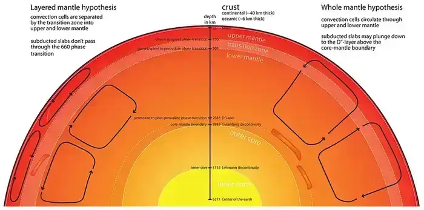
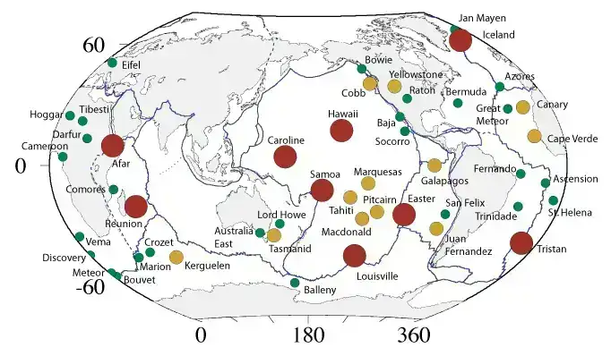
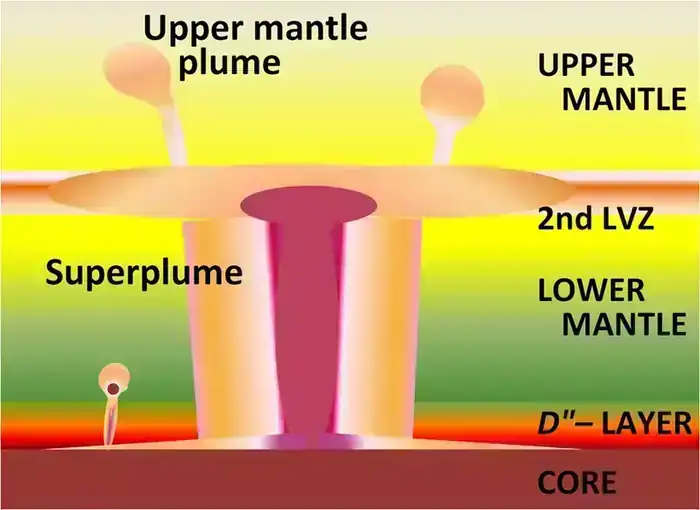

The theory
Mantle plumes were proposed in 1971 to explain hotspot volcanism: narrow columns of hot rock rising from the deep mantle, producing volcanic chains as plates move over them. Hawaii is the standard example, with its progressive age sequence along the chain.
Maps, diagrams and images






The problem
Seismic imaging has not produced a clear, unambiguous plume beneath Hawaii or Iceland. Some tomographic studies find low-velocity anomalies extending deep; others find features confined to the upper mantle. The 'plume' debate has run for decades, with alternatives including edge-driven convection, lithospheric cracks and shallow decompression melting.
The hotspot phenomenon is not in dispute. The question is what is underneath it, and how deep the cause goes.
Documented: hotspot chains and their age progression.
Contested: whether deep plumes exist.
Mixed: the seismic evidence.
Alternatives: shallow and edge-driven mechanisms.
The honest label: live debate.
Why it is in the archive
Because it is a textbook theory that a textbook reader would assume was settled, and because the imaging is genuinely ambiguous.
Open resources on this topic
- BookNASA Technical Reports Server (NTRS) 19930005146: Mantle plumes on Venus revisited — NASA Technical Reports Server (NTRS) · 1992 (Internet Archive, free to read)
- BookMantle plumes and their record in earth history — Condie, Kent C · 2001 (Internet Archive, free to read)
- BookOre deposits and mantle plumes — Pirajno, Franco, 1939- · 2000 (Internet Archive, free to read)
- PapersOpen-access articles: DOAJ · PubMed Central · Internet Archive Scholar
- BooksPublic-domain and borrowable copies: Open Library · Project Gutenberg · Google Books
More images
Cite this page
Momin, S. (2026). Mantle Plumes. The Larger World Archive. https://drsamonline.github.io/LARGE_GLOBE/mantle-plumes.htmlMomin, Sohil. “Mantle Plumes.” The Larger World Archive, 2026, https://drsamonline.github.io/LARGE_GLOBE/mantle-plumes.html.Momin, Sohil. “Mantle Plumes.” The Larger World Archive, 2026. https://drsamonline.github.io/LARGE_GLOBE/mantle-plumes.html.@misc{mantle2026mantle,
author = {Momin, Sohil},
title = {Mantle Plumes},
year = {2026},
howpublished = {The Larger World Archive},
url = {https://drsamonline.github.io/LARGE_GLOBE/mantle-plumes.html},
note = {Last reviewed 20 November 2026}
}Last reviewed 20 November 2026 · Corrections policy · this page is not peer reviewed
Sources for this page
- Wikipedia, “Mantle plume” — the theory and the debateen.wikipedia.org
- Wikipedia, “Hotspot (geology)” — the phenomenonen.wikipedia.org
- Wikipedia, “Seismic tomography” — the imaging methoden.wikipedia.org
- Wikipedia, “Hawaii hotspot” — the case studyen.wikipedia.org